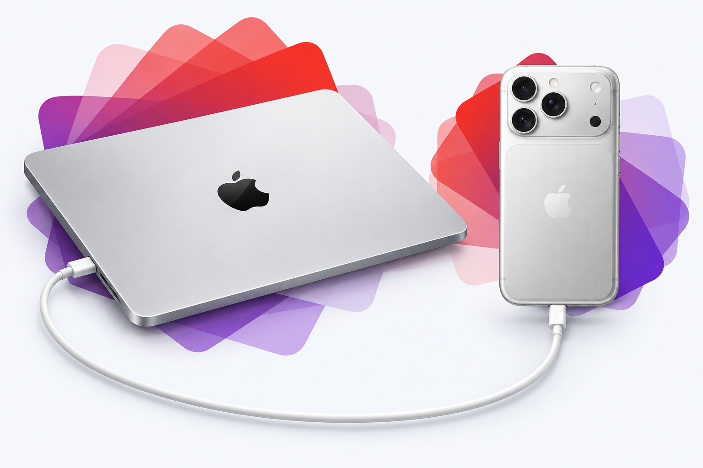

Reuse before replacing.
Explore whether sharing work across devices you already own can help delay your next hardware upgrade.
EXPERIMENTAL LOCAL AI, BUILT WITH MLX
More intelligence from the devices you already own.
MLX Peer explores sharing AI computation between your Mac and iPhone over USB. Our goal: make useful local AI possible with fewer new hardware purchases.
One model. Two devices. Computation stays local.

THE MISSION
Useful AI should begin with the technology already in our hands. We’re exploring how a Mac and iPhone can work together to make buying more hardware less necessary.
Explore whether sharing work across devices you already own can help delay your next hardware upgrade.
Run supported inference on nearby devices, giving people an alternative to sending every AI task to a data center.
Our long-term aim is fewer unnecessary electronics purchases, less electronic waste, and less demand for new batteries and mined materials, including cobalt where it is used.
The ambition is a smaller footprint. We still need to measure energy use, battery wear, avoided purchases, and the overall environmental impact. Local computation alone does not establish an environmental benefit.
Background: Global E-waste Monitor ↗Battery materials and chemistries ↗
01 / THE ARCHITECTURE
A language model is a sequence of layers. MLX Peer gives some of those layers to your phone, then passes intermediate results between the two devices.
The exporter streams separate weight files for the Mac and iPhone without first allocating the entire model in memory. The Mac keeps the input embeddings and output head.
What crosses the cable? Activations: intermediate numerical results, not the entire model on every step. Each device retains its own assigned weights and model state.
02 / THE EVIDENCE
Recorded on an 18 GiB M3 Pro Mac and an iPhone 16. The results are from short developer experiments, with the original checks and limitations preserved.
4-bit language model, split across two physical devices.
12 of the model’s 64 layers executed on the phone.
After the first token; not end-to-end throughput.
03 / EXPLORE IT YOURSELF
The source, experiment reports, and reproduction steps are on GitHub. Start with a small model and reference checks before trying the experimental 27B path.
# Get the project
git clone https://github.com/samuelreyes982/mlx-peer.git
cd mlx-peer
# Then follow the repository guide
# for environment and device setup.This is a source-based developer prototype. There is no App Store release yet. Model weights are downloaded separately.